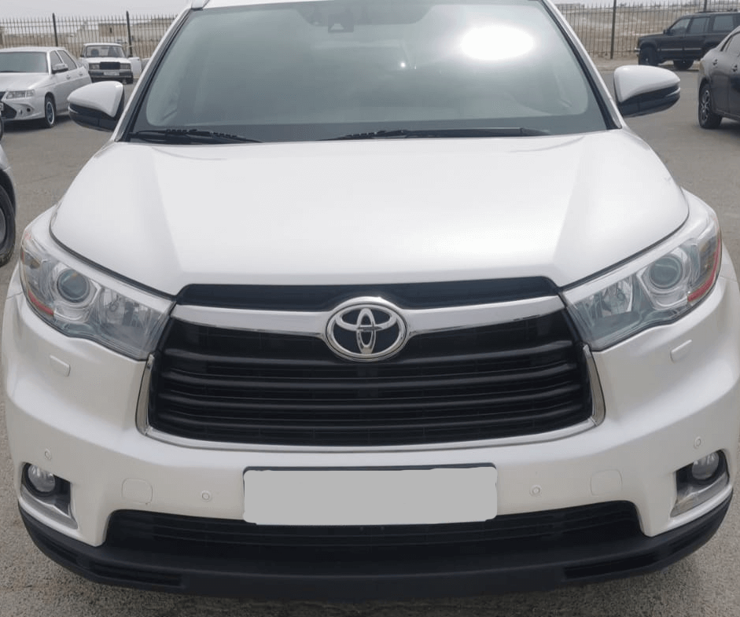

Технические характеристики
Toyota

Технические характеристики Toyota Highlander:
• Объем двигателя: 3.5 L
• Двигатель - газ-бензин, 3500 куб.см, 249 л.с.
• Масса - от 1581 до 2205 кг.
• Привод - 4WD
• Расход топлива по трассе: 15.0/100км